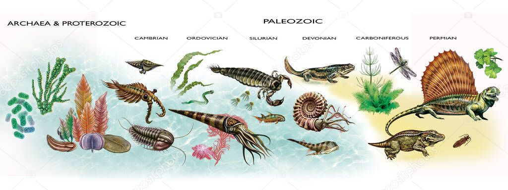

Paleozoyik, Yunanca "antik yaşam" anlamına gelmektedir ve dünya tarihinin biyolojik açıdan en hareketli dönemlerinden biridir. Yaklaşık 538,8 milyon yıl önce deniz hayvanlarında olağanüstü bir çeşitlenmeye yol açan Kambriyen Patlaması ile başlayan bu süreç, 252 milyon yıl önce dünya tarihinin gördüğü en büyük toplu yok oluş olan Permiyen Sonu Yok Oluşu ile tamamlanmıştır.
Antik Yaşamın Altı Büyük Dönemi
Paleozoyik Zamanı, yaşamın denizlerden karaya sıçradığı ve devasa ormanların oluştuğu altı ana bölüme ayrılmaktadır:
• Kambriyen: Karmaşık çok hücreli yaşamın ve modern hayvan şubelerinin aniden ortaya çıktığı başlangıç evresi.
• Ordovisyen: Omurgasızların çeşitlendiği ve ilk ilkel bitkilerin kıyılarda görüldüğü dönem.
• Silüryen: Çeneli balıkların evrimi ve karasal yaşamın ilk kalıcı izlerinin oluşumu.
• Devoniyen: "Balık Çağı" olarak bilinen, ilk amfibilerin ve gerçek ormanların ortaya çıktığı evre.
• Karbonifer: Dev sürüngenlerin ve kömür yataklarını oluşturan devasa eğrelti otu ormanlarının hakimiyeti.
• Permiyen: Sürüngenlerin baskınlaştığı ve Pangea süper kıtasının birleştiği, büyük bir yok oluşla biten son dönem.

Paleozoyik Zaman boyunca denizlerden karaya geçişi, ilk omurgalıların ve dev kanatlı böceklerin evrimsel gelişimini gösteren şematik illüstrasyon.